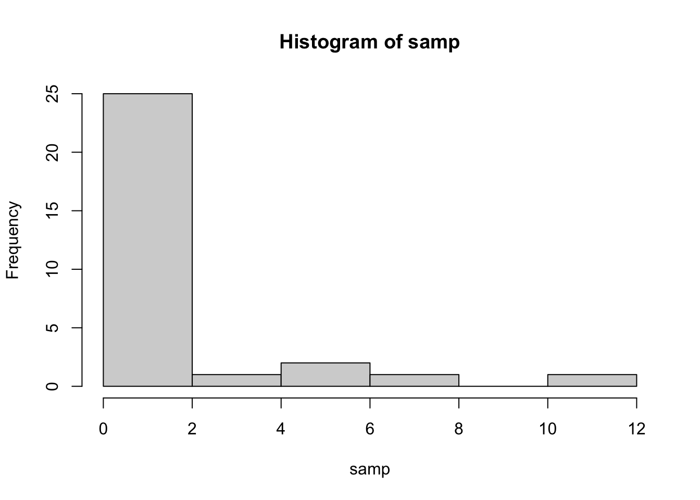
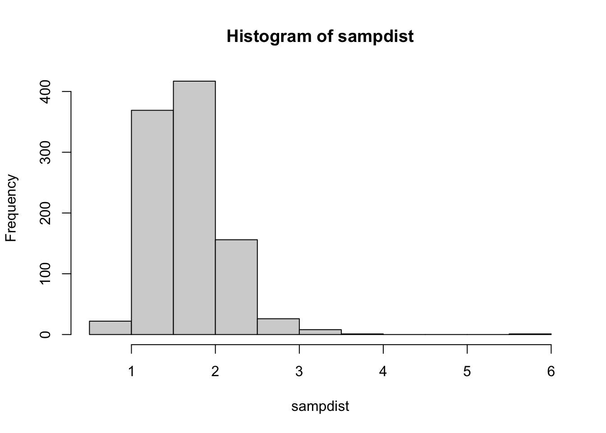

8 Функциональное программирование в R
8.1 Создание функций
Поздравляю, сейчас мы выйдем на качественно новый уровень владения R. Вместо того, чтобы пользоваться теми функциями, которые уже написали за нас, мы можем сами создавать свои функции! В этом нет ничего сложного.
Синтаксис создания функции внешне похож на создание циклов или условных конструкций. Мы пишем ключевое слово function, в круглых скобках обозначаем переменные, с которыми собираемся что-то делать. Внутри фигурных скобок пишем выражения, которые будут выполняться при запуске функции. У функции есть свое собственное окружение — место, где хранятся переменные. Именно те объекты, которые мы передаем в скобочках, и будут в окружении, так же как и “обычные” переменные для нас в глобальном окружении. Это означает, что функция будет искать переменные в первую очередь среди объектов, которые переданы в круглых скобочках. С ними функция и будет работать. На выходе функция выдаст то, что вычисляется внутри функции return(). Если return() появляется в теле функции несколько раз, то до результат будет возвращаться из той функции return(), до которой выполнение дошло первым.
pow <- function(x, p) {
power <- x ^ p
return(power)
}
pow(3, 2)## [1] 9Если функция проработала до конца, а функция return() так и не встретилась, то возвращается последнее посчитанное значение.
pow <- function(x, p) {
x ^ p
}
pow(3, 2)## [1] 9Если в последней строчке будет присвоение, то функция ничего не вернет обратно. Это очень распространенная ошибка: функция вроде бы работает правильно, но ничего не возвращает. Нужно писать так, как будто бы в последней строчке результат выполнения выводится в консоль.
pow <- function(x, p) {
power <- x ^ p #Функция ничего не вернет, потому что в последней строчке присвоение!
}
pow(3, 2) #ничего не возвращается из функцииЕсли функция небольшая, то ее можно записать в одну строчку без фигурных скобок.
pow <- function(x, p) x ^ p
pow(3, 2) ## [1] 9Вообще, фигурные скобки используются для того, чтобы выполнить серию выражений, но вернуть только результат выполнения последнего выражения. Это можно использовать, чтобы не создавать лишних временных переменных в глобальном окружении.
Мы можем оставить в функции параметры по умолчанию.
pow <- function(x, p = 2) x ^ p
pow(3) ## [1] 9pow(3, 3) ## [1] 27В R работают ленивые вычисления (lazy evaluations). Это означает, что параметры функций будут только когда они понадобятся, а не заранее. R будет как самый ленивый прокрастинатор откладывать чтение данных, пока они не понадобятся в вычислениях.
Это приводит к тому, что если параметр никак не задан, то обнаружится это только при его непосредственном использовании. Например, эта функция не будет выдавать ошибку, если мы не зададим параметр we_will_not_use_this_parameter =, потому что он нигде не используется в расчетах.
pow <- function(x, p = 2, we_will_not_use_this_parameter) x ^ p
pow(x = 3)## [1] 98.2 Проверка на адекватность
Лучший способ не бояться ошибок и предупреждений — научиться прописывать их самостоятельно в собственных функциях. Это позволит понять, что за текстом предупреждений и ошибок, которые у вас возникают, стоит забота разработчиков о пользователях, которые хотят максимально обезопасить нас от наших непродуманных действий.
Хорошо написанные функции не только выдают правильный результат на все возможные адекватные данные на входе, но и не дают получить правдоподобные результаты при неадекватных входных данных. Как вы уже знаете, если на входе у вас имеются пропущенные значения, то многие функции будут в ответ тоже выдавать пропущенные значения. И это вполне осознанное решение, которое позволяет избегать ситуаций вроде той, когда около одной пятой научных статей по генетике содержало ошибки в приложенных данных и замечать пропущенные значения на ранней стадии. Кроме того, можно проводить проверки на адекватность входящих данных (sanity check).
Разберем это на примере самодельной функции imt(), которая выдает индекс массы тела, если на входе задать вес (аргумент weight =) в килограммах и рост (аргумент height =) в метрах.
imt <- function(weight, height) weight / height ^ 2Проверим, что функция работает верно:
w <- c(60, 80, 120)
h <- c(1.6, 1.7, 1.8)
imt(weight = w, height = h)## [1] 23.43750 27.68166 37.03704Очень легко перепутать и написать рост в сантиметрах. Было бы здорово предупредить об этом пользователя, показав ему предупреждающее сообщение, если рост больше, чем, например, 3. Это можно сделать с помощью функции warning()
imt <- function(weight, height) {
if (any(height > 3)) warning("Рост в аргументе height больше 3: возможно, указан рост в сантиметрах, а не в метрах\n")
weight / height ^ 2
}
imt(78, 167)## Warning in imt(78, 167): Рост в аргументе height больше 3: возможно, указан рост в сантиметрах, а не в метрах## [1] 0.002796802В некоторых случаях ответ будет совершенно точно некорректным, хотя функция все посчитает и выдаст ответ, как будто так и надо. Например, если какой-то из аргументов функции imt() будет меньше или равен 0. В этом случае нужно прописать проверку на это условие, и если это действительно так, то выдать пользователю ошибку.
imt <- function(weight, height) {
if (any(weight <= 0 | height <= 0)) stop("Индекс массы тела не может быть посчитан для отрицательных значений")
if (any(height > 3)) warning("Рост в аргументе height больше 3: возможно, указан рост в сантиметрах, а не в метрах\n")
weight / height ^ 2
}
imt(-78, 167)## Error in imt(-78, 167): Индекс массы тела не может быть посчитан для отрицательных значенийКогда вы попробуете самостоятельно прописывать предупреждения и ошибки в функциях, то быстро поймете, что ошибки - это вовсе не обязательно результат того, что где-то что-то сломалось и нужно паниковать. Совсем даже наоборот, прописанная ошибка - чья-то забота о пользователях, которых пытаются максимально проинформировать о том, что и почему пошло не так.
Это естественно в начале работы с R (и вообще с программированием) избегать ошибок, конечно, в самом начале обучения большая часть из них остается непонятной. Но постарайтесь понять текст ошибки, вспомнить в каких случаях у вас возникала похожая ошибка. Очень часто этого оказывается достаточно чтобы понять причину ошибки даже если вы только-только начали изучать R.
Ну а в дальнейшем я советую ознакомиться со средствами отладки кода в R для того, чтобы научиться справляться с ошибками в своем коде на более продвинутом уровне.
8.3 Когда и зачем создавать функции?
Когда стоит создавать функции? Существует “правило трех” — если у вас есть три куска очень похожего кода, то самое время превратить код в функцию. Это очень условное правило, но, действительно, стоит избегать копипастинга в коде. В этом случае очень легко ошибиться, а сам код становится нечитаемым.
Есть и другой подход к созданию функций: их стоит создавать не столько для того, чтобы использовать тот же код снова, сколько для абстрагирования от того, что происходит в отдельных строчках кода. Если несколько строчек кода были написаны для того, чтобы решить одну задачу, которой можно дать понятное название (например, подсчет какой-то особенной метрики, для которой нет готовой функции в R), то этот код стоит обернуть в функцию. Если функция работает корректно, то теперь не нужно думать над тем, что происходит внутри нее. Вы ее можете мысленно представить как операцию, которая имеет определенный вход и выход — как и встроенные функции в R.
Отсюда следует важный вывод, что хорошее название для функции — это очень важно. Очень, очень, очень важно.
8.4 Функции как объекты первого порядка
Ранее мы убедились, что арифметические операторы — это тоже функции. На самом деле, практически все в R — это функции. Даже function — это функция function(). Даже скобочки (, { — это функции!
А сами функции — это объекты первого порядка в R. Это означает, что с функциями вы можете делать практически все то же самое, что и с другими объектами в R (векторами, датафреймами и т.д.). Небольшой пример, который может взорвать ваш мозг:
list(mean, min, `{`)## [[1]]
## function (x, ...)
## UseMethod("mean")
## <bytecode: 0x7f93d9200cd8>
## <environment: namespace:base>
##
## [[2]]
## function (..., na.rm = FALSE) .Primitive("min")
##
## [[3]]
## .Primitive("{")Мы можем создать список из функций! Зачем — это другой вопрос, но ведь можем же!
Еще можно создавать функции внутри функций,16 использовать функции в качестве аргументов функций, сохранять функции как переменные. Пожалуй, самое важное из этого всего - это то, что функция может быть аргументом в функции. Не просто название функции как строковая переменная, не результат выполнения функции, а именно сама функция. Это лежит в основе использования семейства функций apply() (@ref(apply_f) и многих фишек tidyverse.
В Python дело обстоит похожим образом: функции там тоже являются объектами первого порядка, поэтому все эти фишки функционального программирования (с поправкой на синтаксис, конечно) будут работать и там.
8.5 Семейство функций apply()
8.5.1 Применение apply() для матриц
Семейство? Да, их целое множество: apply(), lapply(),sapply(), vapply(),tapply(),mapply(), rapply()… Ладно, не пугайтесь, всех их знать не придется. Обычно достаточно первых двух-трех. Проще всего пояснить как они работают на простой матрице с числами:
A <- matrix(1:12, 3, 4)
A ## [,1] [,2] [,3] [,4]
## [1,] 1 4 7 10
## [2,] 2 5 8 11
## [3,] 3 6 9 12Функция
apply()предназначена для работы с матрицами (или многомерными массивами). Если вы скормите функцииapply()датафрейм, то этот датафрейм будет сначала превращен в матрицу. Главное отличие матрицы от датафрейма в том, что в матрице все значения одного типа, поэтому будьте готовы, что сработает имплицитное приведение к общему типу данных. Например, если среди колонок датафрейма есть хотя бы одна строковая колонка, то все колонки станут строковыми.
Теперь представим, что нам нужно посчитать что-нибудь (например, сумму) по каждой из строк. С помощью функции apply() вы можете в буквальном смысле “применить” функцию к матрице или датафрейму. Синтаксис такой: apply(X, MARGIN, FUN, ...), где X — данные, MARGIN это 1 (для строк), 2 (для колонок), c(1,2) для строк и колонок (т.е. для каждого элемента по отдельности), а FUN — это функция, которую вы хотите применить! apply() будет брать строки/колонки из X в качестве первого аргумента для функции.

apply
Заметьте, мы вставляем функцию без скобок и кавычек как аргумент в функцию. Это как раз тот случай, когда аргументом в функции выступает сама функция, а не ее название или результат ее выполнения.
Давайте разберем на примере:
apply(A, 1, sum) #сумма по каждой строчке## [1] 22 26 30apply(A, 2, sum) #сумма по каждой колонке## [1] 6 15 24 33apply(A, c(1,2), sum) #кхм... сумма каждого элемента## [,1] [,2] [,3] [,4]
## [1,] 1 4 7 10
## [2,] 2 5 8 11
## [3,] 3 6 9 12Конкретно для подсчета сумм и средних по столбцам и строкам в R есть функции
colSums(),rowSums(),colMeans()иrowMeans(), которые можно использовать как альтернативыapply()в данном случае.
Если же мы хотим прописать дополнительные аргументы для функции, то их можно перечислить через запятую после функции:
apply(A, 1, sum, na.rm = TRUE)## [1] 22 26 30apply(A, 1, weighted.mean, w = c(0.2, 0.4, 0.3, 0.1)) ## [1] 4.9 5.9 6.98.5.2 Анонимные функции
Что делать, если мы хотим сделать что-то более сложное, чем просто применить одну функцию? А если функция принимает не первым, а вторым аргументом данные из матрицы? В этом случае нам помогут анонимные функции.
Анонимные функции - это функции, которые будут использоваться один раз и без названия.
Питонистам знакомо понятие лямбда-функций. Да, это то же самое.
Например, мы можем посчитать сумму квадратичных отклонений от среднего без называния этой функции:
apply(A, 1, function(x) sum((x - mean(x))^2)) #отклонения от среднего по строчке## [1] 45 45 45apply(A, 2, function(x) sum((x - mean(x))^2)) #отклонения от среднего по столбцу## [1] 2 2 2 2apply(A, c(1, 2), function(x) sum((x - mean(x))^2)) #отклонения от одного значения, т.е. ноль## [,1] [,2] [,3] [,4]
## [1,] 0 0 0 0
## [2,] 0 0 0 0
## [3,] 0 0 0 0Как и в случае с обычной функцией, в качестве x выступает объект, с которым мы хотим что-то сделать, а дальше следует функция, которую мы собираемся применить к х. Можно использовать не х, а что угодно, как и в обычных функциях:
apply(A, 1, function(whatevername) sum((whatevername - mean(whatevername))^2))## [1] 45 45 458.5.3 Другие функции семейства apply()
Ок, с apply() разобрались. А что с остальными? Некоторые из них еще проще и не требуют индексов, например, lapply (для применения к каждому элементу списка) и sapply() - упрощенная версия lapply(), которая пытается по возможности “упростить” результат до вектора или матрицы.
some_list <- list(some = 1:10, list = letters)
lapply(some_list, length)## $some
## [1] 10
##
## $list
## [1] 26sapply(some_list, length)## some list
## 10 26Достаточно сложно предсказать, в каких именно случаях будет произведено упрощение, а в каких нет. Поэтому
sapply()удобен в исследовании данных, но использовать эту функцию в скриптах не очень рекомендуется. Один из вариантов решения этой проблемы — это функцияvapply(), которая позволяет управлять результатомlapply(), но гораздо более красиво эта проблема решена в пакете{purrr}(см. 10.4).
Использование sapply() на векторе приводит к тем же результатам, что и просто применить векторизованную функцию обычным способом.
sapply(1:10, sqrt)## [1] 1.000000 1.414214 1.732051 2.000000 2.236068 2.449490 2.645751 2.828427
## [9] 3.000000 3.162278sqrt(1:10)## [1] 1.000000 1.414214 1.732051 2.000000 2.236068 2.449490 2.645751 2.828427
## [9] 3.000000 3.162278Зачем вообще тогда нужен sapply(), если мы можем просто применить векторизованную функцию? Ключевое слово здесь векторизованная функция. Если функция не векторизована, то sapply() становится удобным вариантом для того, чтобы избежать итерирования с помощью циклов for.
Еще одна альтернатива - это векторизация невекторизованной функции с помощью
Vectorize(). Эта функция просто оборачивает функцию одним из вариантовapply().
Можно применять функции lapply() и sapply() на датафреймах. Поскольку фактически датафрейм - это список из векторов одинаковой длины (см. 4.4), то итерироваться эти функции будут по колонкам:
heroes <- read.csv("https://raw.githubusercontent.com/Pozdniakov/tidy_stats/master/data/heroes_information.csv",
na.strings = c("-", "-99"))
sapply(heroes, class)## X name Gender Eye.color Race Hair.color
## "integer" "character" "character" "character" "character" "character"
## Height Publisher Skin.color Alignment Weight
## "numeric" "character" "character" "character" "integer"Еще одна функция из семейства apply() - функция replicate() - самый простой способ повторить одну и ту же операцию много раз. Обычно эта функция используется при симуляции данных и моделировании. Например, давайте сделаем выборку из логнормального распределения:
samp <- rlnorm(30)
hist(samp)
А теперь давайте сделаем 1000 таких выборок и из каждой возьмем среднее:
sampdist <- replicate(1000, mean(rlnorm(30)))
hist(sampdist)
Про функции для генерации случайных чисел и про визуализацию мы поговорим в следующие дни.
Если хотите познакомиться с семейством apply() чуточку ближе, то рекомендую вот этот туториал.
В заключение стоит сказать, что семейство функций apply() — это очень сильное колдунство, но в tidyverse оно практически полностью перекрывается функциями из пакета purrr. Впрочем, если вы поняли логику apply(), то при желании вы легко сможете переключиться на альтернативы из пакета purrr (см. 10.4)
Функция, которая создает другие функции, называется фабрикой функций.↩︎